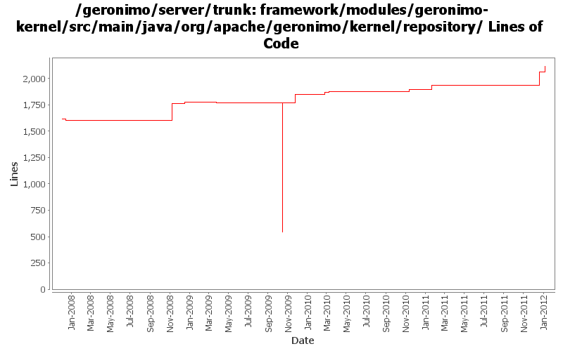

[root]/framework/modules/geronimo-kernel/src/main/java/org/apache/geronimo/kernel/repository

| Author | Changes | Lines of Code | Lines per Change |
|---|---|---|---|
| Totals | 72 (100.0%) | 1802 (100.0%) | 25.0 |
| djencks | 40 (55.6%) | 1520 (84.4%) | 38.0 |
| gdamour | 7 (9.7%) | 158 (8.8%) | 22.5 |
| xuhaihong | 14 (19.4%) | 57 (3.2%) | 4.0 |
| gawor | 5 (6.9%) | 41 (2.3%) | 8.2 |
| jbohn | 4 (5.6%) | 21 (1.2%) | 5.2 |
| jdillon | 2 (2.8%) | 5 (0.3%) | 2.5 |
GERONIMO-6251 determine if server is actually fully started, provide access to DependencyManager for osgi metadata purposes
55 lines of code changed in 1 file:
GERONIMO-6240 Make several base geronimo functions (kernel, deployer, etc) DS services and make the car-maven-plugin take advantage of that. Server assembly doesn't work yet, builds framework.
139 lines of code changed in 4 files:
GERONIMO-6058 Replace StringBuffer usage with StringBuilder
2 lines of code changed in 4 files:
GERONIMO-5680 Remove dynamic import * and use calculated import packages on the runtime, only for deployed applications now
48 lines of code changed in 2 files:
refactor code a bit: inject dynamic-import-header in DeploymentContext instead of Environment and generate slightly better import-package headers
1 lines of code changed in 1 file:
forgot copy dynamicImports in copy constructor
1 lines of code changed in 1 file:
add support for DynamicImport-Package header in configuration environment
20 lines of code changed in 1 file:
GERONIMO-5298 Bad version information in deployment plan will result in deploy failure
4 lines of code changed in 1 file:
add some toString methods and some logging to help figure out what happens during deployment
8 lines of code changed in 1 file:
use the environment to create manifest for the temporary bundle
0 lines of code changed in 1 file:
add support for Require-Bundle header in configuration environment
19 lines of code changed in 1 file:
GERONIMO-5008 Create util methods for all the Geronimo components
2 lines of code changed in 3 files:
GERONIMO-5008 Create util methods for all the Geronimo components
0 lines of code changed in 3 files:
GERONIMO-4911 Put osgi manifest info in environment, generate manifest in the deployer not in car-maven-plugin. Reduce use of jee-specs, try to eliminate spring car. Don't try to build plugingroups or assemblies until they actually build
91 lines of code changed in 1 file:
The special handling for xbean-naming should not be needed now since we have shipped 3.* xbean-naming package
1 lines of code changed in 1 file:
GERONIMO-4916 step 2 move sandbox osgi framework into trunk
1227 lines of code changed in 10 files:
GERONIMO-4916 step 1 remove old framwork
0 lines of code changed in 11 files:
GERONIMO-4597 Validate Web Admin Console input - fixes for CVE-2008-5518, CVE-2009-0038, and CVE-2009-0039
4 lines of code changed in 1 file:
GERONIMO-4473 validate group, artifact, version and type when adding an archive to the repo
17 lines of code changed in 1 file:
Add private-classes element which allows specific classes to be hidden from all child configurations. In effect, they are private to the configuration.
(GERONIMO-4403) Provide a mechanism to hide specific classes of a configuration to all its children
158 lines of code changed in 5 files:
Fix a classloader clash happening when a WADI clustered application is
deployed: Tribes classes were loaded by the configurations
org.apache.geronimo.configs/tomcat6//car and
org.apache.geronimo.configs/wadi-clustering//car and should only be loaded
by the wadi-clustering configuration.
Add a org.apache.geronimo.configs/tomcat6-no-ha//car configuration, which
imports org.apache.geronimo.configs/tomcat6//car and hides the Tribes classes.
When a WADI clustered application is built, the tomcat6 configuration is
removed from the clustered application ancestor list and replaced by
tomcat6-no-ha. Tribes classes are now loaded by wadi-clustering.
0 lines of code changed in 2 files:
GERONIMO-4182 Include aliases when querying the repository for an artifact
0 lines of code changed in 2 files:
Start of custom SLF4J muck for Geronimo
2 lines of code changed in 1 file:
(GERONIMO-3985) Use SLF4J as the primary logging facade for Geronimo
3 lines of code changed in 1 file:
GERONIMO-3754 Add name/pw to sourceRepositoryFactory. Fix some problems with patch re trying to install already-installed plugins
0 lines of code changed in 2 files:
GERONIMO-3607 Large cleanup of code for extracting assemblies from running servers. Should greatly improve dealing with snapshots in local maven repos. Also changes meaning of plugin dependency start flag to override plugin load flag.
0 lines of code changed in 6 files:
GERONIMO-3607 Add 'assemble a server' support to geronimo and use it from car-maven-plugin and gshell. Not yet available in the console. Better repository support would be desirable
0 lines of code changed in 4 files: